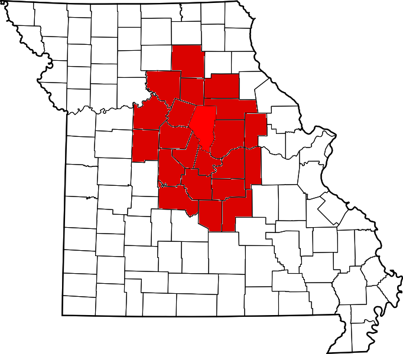

On this page, we will add some interactive functions attached to the map, which indicates the coverage of Missourian. Dots will be pined on the map representing where the photo stories locate. Users can expect to explore our archive by this locational search tool.
Some other categories will be also added to organize the archive, and those items are roughly planned to be listed as bullets.